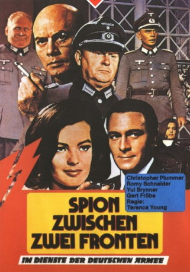

#6828 Spion zwischen zwei Fronten
 
 IMDB-Wertung: 6.4 / 10
IMDB-Wertung: 6.4 / 10  Metascore: 0
Metascore: 0 
Geldschrankknacker Eddie Chapman hat in seiner Heimat England bereits fast 40 Safes geleert, als man ihn auf der Kanalinsel Jersey zu fassen bekommt. Die nächsten 15 Jahre soll er hinter Gittern verbringen. Als die Deutschen 1940 Jersey besetzen, sieht er seine Chance: Er bietet sich dem deutschen Geheimdienst als Spion an. Oberst Steinhäger von der Abwehr ist zwar misstrauisch, General von Grünen, Chef der erfolgreichsten Agententruppe der Wehrmacht, findet jedoch Gefallen an dem unverfrorenen Briten, der offensichtlich wenig von Patriotismus, aber desto mehr von klingender Münze hält.
Jahr: 1966
Dauer: 117 Minuten
FSK: 16
Land: Frankreich Studio: Gloria FilmverleihTonspuren: DD5.1 - ,
Untertitel:
Auflösung: 1080p (1872x1080) Größe: 6717 MB
Genre: Action, Thriller, Drama, Abenteuer, Krieg
Regisseur: Terence Young
Drehbuch: Glenn Berger
Soundtrack:
Darsteller:
 Christopher Plummer als Eddie Chapman
Christopher Plummer als Eddie Chapman Romy Schneider als Helga Lindstrom aka The Countess
Romy Schneider als Helga Lindstrom aka The Countess Trevor Howard als Freddie Young aka Distinguished Civilian
Trevor Howard als Freddie Young aka Distinguished Civilian Gert Fröbe als Colonel Steinhager
Gert Fröbe als Colonel Steinhager- Claudine Auger als Paulette
 Yul Brynner als Baron Von Grunen
Yul Brynner als Baron Von Grunen Jess Hahn als Commander Braid
Jess Hahn als Commander Braid Anthony Dawson als Major Stillman
Anthony Dawson als Major Stillman Howard Vernon als German Embassy Official
Howard Vernon als German Embassy Official Jean-Pierre Zola als Jersey Prison Commandant
Jean-Pierre Zola als Jersey Prison Commandant- Jean-Marc Bory als Resistance Leader , uncredited
 Gordon Jackson als British Sergeant Questioning Chapman , uncredited
Gordon Jackson als British Sergeant Questioning Chapman , uncredited- Harry Meyen als Lieutenant Keller
- Georges Lycan als Leo
- John Abbey als Lang
- Gil Barber als Bergman
- Jean-Claude Bercq als Major Von Leeb
- Paul Bonifas als Charlie
 Jean-Roger Caussimon als Luftwaffe General
Jean-Roger Caussimon als Luftwaffe General- Annette Claudier als Prison Clerk
- Jean Claudio als Sergeant Thomas
- Pierre Collet als German Warder
 Georges Douking als Polish Interrogator
Georges Douking als Polish Interrogator- Colin Drake als English Farmer
- Robert Favart als General Dalrymple
- Fred Fisher als German Admiral
 Bernard Fresson als French Resistant Raymond
Bernard Fresson als French Resistant Raymond- Gisèle Grimm als Major Lawrence
- Harvey Hall als Detainee Center Sergeant
- Clément Harari als Losch
- Jacques Harden als Canadian Prisoner
- David Hutcheson als Ministry Official
- Marcel Journet als Marshall von Runstedt
- Morteza Kazerouni als Freddie, the Chauffeur
- Richard Larke als Jersey Prison Warder
- Robert Le Béal als Lieutenant Cameron
- Violette Marceau als Prisoner Girl
- Guy Marly als Luftwaffe Officer
- Jacques Mayar als S.S. Lieutenant
- Paul Mesnier als Wehrmacht General
- Charles Millot als 2nd Polish Interrogator
- Hubert Noël als Von Runstedt's Aide de Camp
- Jean Ozenne als Gal Von Langsdorf
- Marcel Roche als Jersey Prison Head Warder
- Albert Simono als B.B.C. Reporter
- Anthony Stuart als Wing Commander
- Michel Thomass als 3rd Polish Interrogator
- Edward Underdown als Air Marshall
- François Valorbe als S.S. Commandant
- Van Doude als Plotting Officer
Datei: X:\1966\Spion zwischen zwei Fronten (1966, FSK16, 1872x1080).mkv seit 30.08.2017
Festplatte: HD 1900-1970
 Es gibt insgesamt 27 Filme in der Gruppe '1966'
Es gibt insgesamt 27 Filme in der Gruppe '1966'